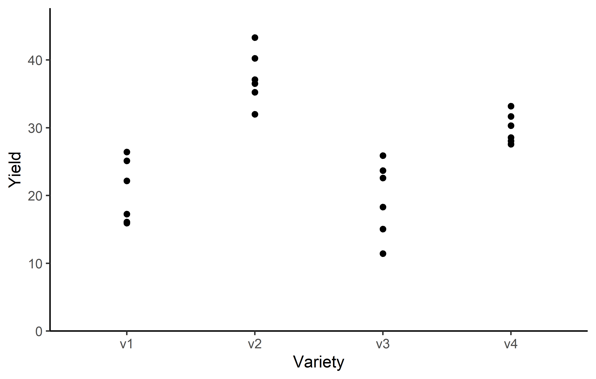
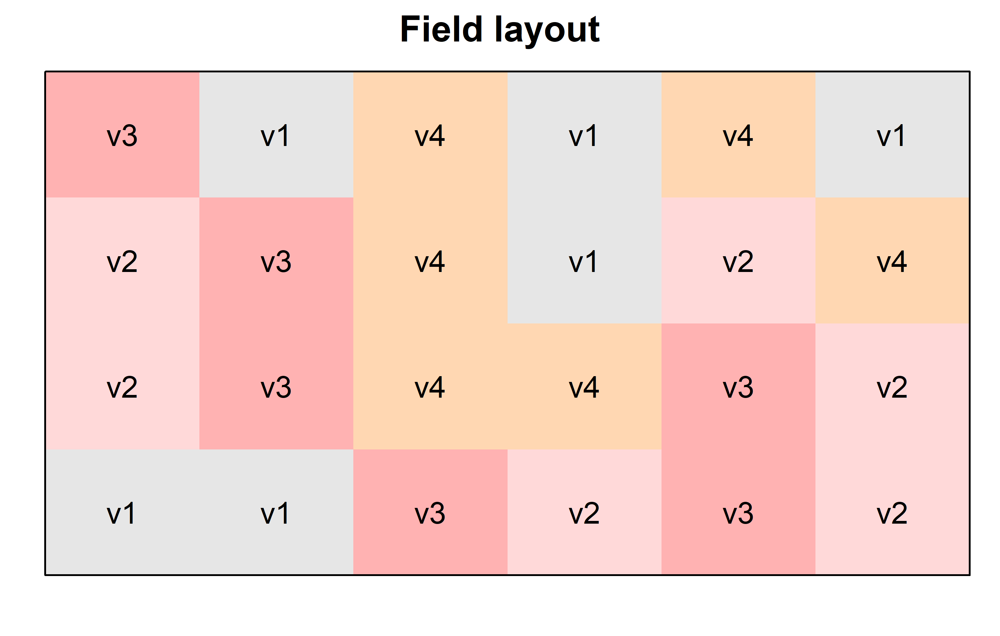
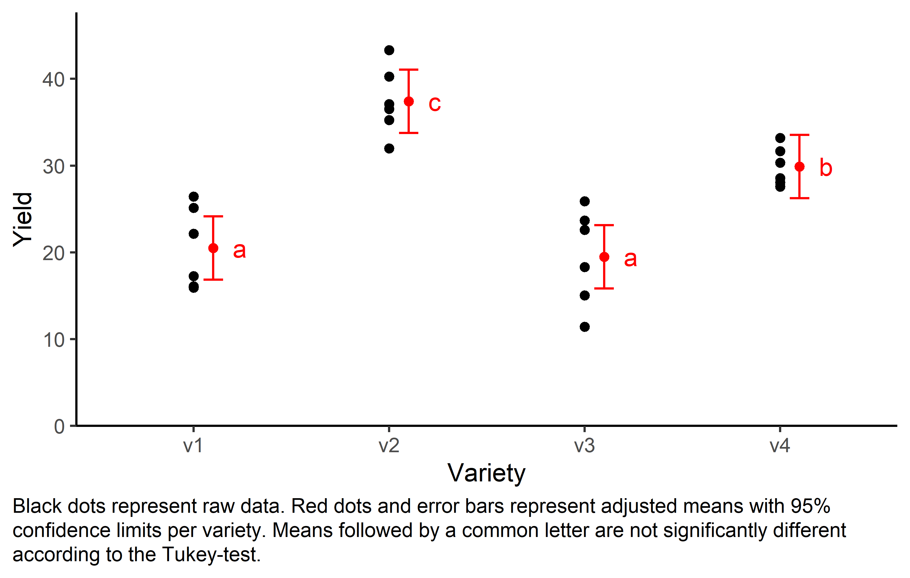

# (install &) load packages
pacman::p_load(
conflicted,
desplot,
emmeans,
ggtext,
multcomp,
multcompView,
tidyverse)
# handle function conflicts
conflict_prefer("filter", "dplyr")
conflict_prefer("select", "dplyr")One-way completely randomized design
Paul Schmidt ![]()
Abstract
One-way ANOVA & pairwise comparison post hoc tests in a completely randmoized design.
Data
This example is taken from “Example 4.3” of the course material “Quantitative Methods in Biosciences (3402-420)” by Prof. Dr. Hans-Peter Piepho. It considers data published on p.52 of Mead, Curnow, and Hasted (2002) from a yield trial with melons. The trial had 4 melon varieties (variety). Each variety was tested on six field plots. The allocation of treatments (varieties) to experimental units (plots) was completely at random. Thus, the experiment was laid out as a completely randomized design (CRD).
Import
# data is available online:
path <- "https://raw.githubusercontent.com/SchmidtPaul/dsfair_quarto/master/data/Mead1993.csv"dat <- read_csv(path) # use path from above
dat# A tibble: 24 × 4
variety yield row col
<chr> <dbl> <dbl> <dbl>
1 v1 25.1 4 2
2 v1 17.2 1 6
3 v1 26.4 4 1
4 v1 16.1 1 4
5 v1 22.2 1 2
6 v1 15.9 2 4
7 v2 40.2 4 4
8 v2 35.2 3 1
9 v2 32.0 4 6
10 v2 36.5 2 1
# … with 14 more rowsFormat
Before anything, the column variety should be encoded as a factor, since R by default encoded it as a character variable. There are multiple ways to do this - here are two:
Explore
We make use of dlookr::describe() to conveniently obtain descriptive summary tables. Here, we get can summarize per variety.
dat %>%
group_by(variety) %>%
dlookr::describe(yield) %>%
select(2:sd, p00, p100) %>%
arrange(desc(mean))# A tibble: 4 × 7
variety n na mean sd p00 p100
<fct> <int> <int> <dbl> <dbl> <dbl> <dbl>
1 v2 6 0 37.4 3.95 32.0 43.3
2 v4 6 0 29.9 2.23 27.6 33.2
3 v1 6 0 20.5 4.69 15.9 26.4
4 v3 6 0 19.5 5.56 11.4 25.9Additionally, we can decide to plot our data:
Click to show/hide code

Finally, since this is an experiment that was laid with a certain experimental design (= a completely randomized design; CRD) - it makes sense to also get a field plan. This can be done via desplot() from {desplot}:
Click to show/hide code
desplot(
data = dat,
flip = TRUE, # row 1 on top, not on bottom
form = variety ~ col + row, # fill color per variety
text = variety, # variety names per plot
cex = 1, # variety names: font size
shorten = "no", # variety names: don't abbreviate
main = "Field layout", # plot title
show.key = FALSE # hide legend
) 
Model
Finally, we can decide to fit a linear model with yield as the response variable and (fixed) variety effects.
mod <- lm(yield ~ variety, data = dat)ANOVA
Based on our model, we can then conduct an ANOVA:
ANOVA <- anova(mod)
ANOVAAnalysis of Variance Table
Response: yield
Df Sum Sq Mean Sq F value Pr(>F)
variety 3 1291.48 430.49 23.418 9.439e-07 ***
Residuals 20 367.65 18.38
---
Signif. codes: 0 '***' 0.001 '**' 0.01 '*' 0.05 '.' 0.1 ' ' 1Accordingly, the ANOVA’s F-test found the variety effects to be statistically different (p < .001***).
Mean comparison
Besides an ANOVA, one may also want to compare adjusted yield means between varieties via post hoc tests (t-test, Tukey test etc.).
mean_comp <- mod %>%
emmeans(specs = ~ variety) %>% # adj. mean per variety
cld(Letters = letters) # compact letter display (CLD)
mean_comp variety emmean SE df lower.CL upper.CL .group
v3 19.5 1.75 20 15.8 23.1 a
v1 20.5 1.75 20 16.8 24.1 a
v4 29.9 1.75 20 26.2 33.5 b
v2 37.4 1.75 20 33.8 41.1 c
Confidence level used: 0.95
P value adjustment: tukey method for comparing a family of 4 estimates
significance level used: alpha = 0.05
NOTE: If two or more means share the same grouping symbol,
then we cannot show them to be different.
But we also did not show them to be the same. Note that if you would like to see the underlying individual contrasts/differences between adjusted means, simply add details = TRUE to the cld() statement. Furthermore, check out the Summary Article “Compact Letter Display”.
Finally, we can create a plot that displays both the raw data and the results, i.e. the comparisons of the adjusted means that are based on the linear model.
Click to show/hide code
my_caption <- "Black dots represent raw data. Red dots and error bars represent adjusted means with 95% confidence limits per variety. Means followed by a common letter are not significantly different according to the Tukey-test."
ggplot() +
aes(x = variety) +
# black dots representing the raw data
geom_point(
data = dat,
aes(y = yield)
) +
# red dots representing the adjusted means
geom_point(
data = mean_comp,
aes(y = emmean),
color = "red",
position = position_nudge(x = 0.1)
) +
# red error bars representing the confidence limits of the adjusted means
geom_errorbar(
data = mean_comp,
aes(ymin = lower.CL, ymax = upper.CL),
color = "red",
width = 0.1,
position = position_nudge(x = 0.1)
) +
# red letters
geom_text(
data = mean_comp,
aes(y = emmean, label = str_trim(.group)),
color = "red",
position = position_nudge(x = 0.2),
hjust = 0
) +
scale_x_discrete(
name = "Variety"
) +
scale_y_continuous(
name = "Yield",
limits = c(0, NA),
expand = expansion(mult = c(0, 0.1))
) +
theme_classic() +
labs(caption = my_caption) +
theme(plot.caption = element_textbox_simple(margin = margin(t = 5)),
plot.caption.position = "plot")
References
Mead, Roger, Robert N. Curnow, and Anne M. Hasted. 2002. Statistical Methods in Agriculture and Experimental Biology. 3rd ed. CRC Press.